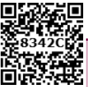
After completing this lesson, students will be able to
understand the electric charge, electric field and Coulomb’s law.
explain the concepts of electric current, voltage, resistance and Ohm’s law.
draw electrical circuit diagrams for series and parallel circuits.
explain the effects of electric current like. heating or thermal effect, chemical effect, and magnetic effect.
understand direct and alternating currents.
know the safety aspects related to electricity.
Like mass and length, electric charge also is a fundamental property of all matter. We know that matter is made up of atoms and molecules. Atoms have particles like electrons, protons and neutrons. By nature, electrons and protons have negative and positive charge respectively and neutrons do not have charge. An electric current consists of moving electric charges. Electricity is an important source of energy in the modern times. In this lesson, we will study about electric charges, electric current, electric circuit diagram and the effects of electric current.
Inside each atom there is a nucleus with positively charged protons and chargeless neutrons and negatively charged electrons orbiting the nucleus. Usually there are as many electrons as there are protons and the atoms themselves are neutral.
If an electron is removed from the atom, the atom becomes positively charged. Then it is called a positive ion. If an electron is added in excess to an atom then the atom is negatively charged and it is called negative ion.
When you rub a plastic comb on your dry hair, the comb obtains power to attract small pieces of paper, is it not questionmark
When you rub the comb vigorously, electrons from your hair leave and accumulate on the edge of the comb. Your hair is now positively charged as it has lost electrons and the comb is negatively charged as it has gained electrons.
Electric charge is measured in coulomb and the symbol for the same is C. The charge of an electron is numerically a very tiny value. The charge of an electron Bracket OPEN represented as e bracket closed is the fundamental unit with a charge equal to 1.6 × 10 power minus 19 C. This indicates that any charge Bracket OPEN q bracket closed has to be an integral multiple Bracket OPEN n bracket closed of this fundamental unit of electron charge Bracket OPEN e bracket closed.
q = ne. Here, n is a whole number
box item open
How many electrons will be there in one coulomb of charge question mark
Solution:
Charge on 1 electron, e = 1.6 into 10 power minus 19 C
Q = ne or n= q by e
Therefore number of electrons in 1 coulomb = 1 by 1.6 × 10 power minus 19
= 6.25 × 10 power 18 electrons box item ends
Practically, we have mew C Bracket OPEN micro coulomb bracket closed, nC Bracket OPEN nano coulomb bracket closed and pC Bracket OPEN pico coulomb bracket closed as units of electric charge.
1 mew C = 10 power minus 6 C, 1 nC = 10 power minus 9 and 1 pC = 10 power minus 12 C
Electric charge is additive in nature. The total electric charge of a system is the algebraic sum of all the charges located in the system. For example, let us say that a system has two charges plus 5C and minus 2C. Then the total or net charge on the system is,
Bracket OPEN plus 5C bracket closed plus Bracket OPEN minus 2C bracket closed = plus 3C.
box item open
Electrostatic forces between two point charges obey Newton’s third law. The force on one charge is the action and on the other is reaction and vice versa. box item ends
Among electric charges, there are two types of electric force Bracket OPEN F bracket closed: one is attractive and the other is repulsive. The like charges repel and unlike charges attract. The force existing between the charges is called as ‘electric force’. These forces can be experienced even when the charges are not in contact.
Figure 4.1 Electrostatic forces images was given below
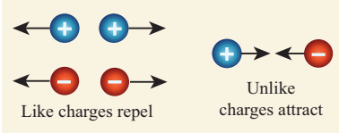
.The region in which a charge experiences electric force forms the ‘electric field’ around the charge. Often electric field Bracket OPEN E bracket closed is represented by lines and arrowheads indicating the direction of the electric field Bracket OPEN Figure 4.2 bracket closed. The direction of the electric field is the direction of the force that would act on a small positive charge. Therefore the lines representing the electric field are called ‘electric lines of force’. The electric lines of force are straight or curved paths along which a unit positive charge tends to move in the electric field. Electric lines of force are imaginary lines. The strength of an electric field is represented by how close the field lines are to one another.
For an isolated positive charge the electric lines of force are radially outwards and for an isolated negative charge they are radially inwards.
Figure 4.2 Electric lines of force image was given below
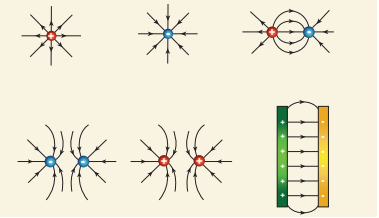
Electric field at a point is a measure of force acting on a unit positive charge placed at that point. A positive charge will experience force in the direction of electric field and a negative charge will experience in the opposite direction of electric field.
Though there is an electric force Bracket OPEN either attractive or repulsive bracket closed existing among the charges, they are still kept together, is it not questionmark. We now know that in the region of electric charge there is an electric field. Other charges experience force in this field and vice versa. There is a work done on the charges to keep them together. This results in a quantity called ‘electric potential.
Electric potential is a measure of the work done on unit positive charge to bring it to that point against all electrical forces.
Figure 4.3 Electric potential and Electric field image was given below
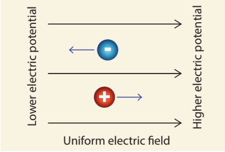
When the charged object is provided with a conducting path, electrons start to flow through the path from higher potential to lower potential region. Normally, the potential difference is produced by a cell or battery. When the electrons move, we say that an electric current is produced. That is, an electric current is formed by moving electrons
Before the discovery of the electrons, scientists believed that an electric current consisted of moving positive charges. Although we know this is wrong, the idea is still widely held, as the discovery of the flow of electrons did not affect the basic understanding of the electric current.
Figure 4.4 Electric current image was given below
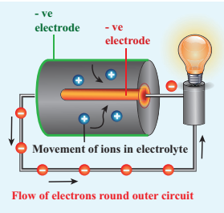
The movement of the positive charge is called as ‘conventional current’. The flow of electrons is termed as ‘electron current’. This is depicted in Figure 4.4.
In electrical circuits the positive terminal is represented by a long line and negative terminal as a short line. Battery is the combination of more than one cell Bracket OPEN Figure 4.5 bracket closed.
Figure 4.5 Cell and battery image was given below
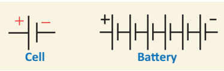
We can measure the value of current and express it numerically. Current is the rate at which charges flow past a point on a circuit. That is, if q is the quantity of charge passing through a cross section of a wire in time t, quantity of current Bracket OPEN I bracket closed is represented as, I = q by t
The standard SI unit for current is ampere with the symbol A. Current of 1 ampere means that there is one coulomb Bracket OPEN1 C bracket closed of charge passing through a cross section of a wire every one second Bracket OPEN 1 s bracket closed.
1 ampere = 1 coulomb by 1 second Bracket OPEN or bracket closed 1 A = 1 C by 1 s = 1C s power minus 1
Ammeter is an instrument used to measure the strength of the electric current in an electric circuit.
The ammeter is connected in series in a circuit where the current is to be found. The current flows through the positive Bracket OPEN plus bracket closed red terminal of ammeter and leaves from the negative Bracket OPEN minus bracket closed black terminal.
Figure 4.6 Ammeter in a circuit image was given below
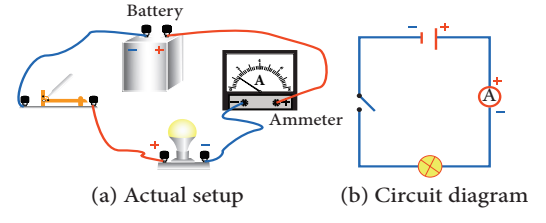
Box item open
If, 25 C of charge is determined to pass through a wire of any cross section in 50 s, what is the measure of current. question mark
Solution:
I = q by t = Bracket OPEN 25 C bracket closed by Bracket OPEN 50 s bracket closed = 0.5 C by s = 0.5 A box item ends
Box item open
The current flowing through a lamp is 0.2 A. If the lamp is switched on for one hour, what is the total electric charge that passes through the lamp question mark
Solution:
I = q by t; q = I into t
1 hr = 1 into 60 into 60 s = 3600 s
q = I into t = 0.2 A into 3600 s = 720 C box item ends
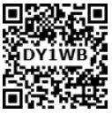
Imagine that two ends of a water pipe filled with water are connected. Although filled with water, the water will not move or circle around the tube on its own. Suppose, you insert a pump in between and the pump pushes the water, then the water will start moving in the tube. Now the moving water can be used to produce some work. We can insert a water wheel in between the flow and make it to rotate and further use that rotation to operate machinery.
Likewise if you take a circular copper wire, it is full of free electrons. However, they are not moving in a particular direction. You need some force to push the electrons to move in a direction. The water pump and a battery are compared in Figure 4.7.
Figure 4.7 Battery is analogues to water pump image was given below
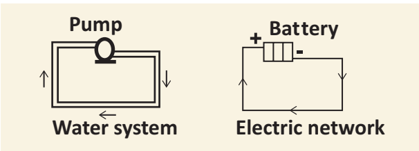
Devices like electric cells and other electrical energy sources act like pump, ‘pushing’ the charges to flow through a wire or conductor. The ‘pumping’ action of the electrical energy source is made possible by the ‘electromotive force, Bracket OPEN e.m.f.bracket closed. The electromotive force is represented as Bracket OPEN epsilon bracket closed. The e.m.f. of an electrical energy source is the work done Bracket OPEN W bracket closed by the source in driving a unit charge Bracket OPEN q bracket closed around the complete circuit
Epsilon = W by q where, W is the work done. The SI unit of e.m.f. is joules per coulomb Bracket OPEN J C power minus 1 bracket closed or volt Bracket OPEN V bracket closed. In other words the e.m.f. of an electrical energy source is one volt if one joule of work is done by the source to drive one coulomb of charge completely around the circuit.
box item open
The e m f of a cell is 1.5 V. What is the energy provided by the cell to drive 0.5 C of charge around the circuit question mark
Solution:
Epsilon = 1.5 V and q = 0.5C
Epsilon = W by q; W = Epsilon into q;
Therefore W = 1.5 into 0.5 = 0.75 J box item ends
One does not just let the circuit connect one terminal of a cell to another. Often we connect, say a bulb or a small fan or any other electrical device in an electric circuit and use the electric current to drive them. This is how a certain amount of electrical energy provided by the cell or any other source of electrical energy is converted into other form of energy like light, heat, mechanical and so on. For each coulomb of charge passing through the light bulb Bracket OPEN or any appliances bracket closed the amount of electrical energy converted to other forms of energy depends on the potential difference across the electrical device or any electrical component in the circuit. The potential difference is represented by the symbol V
V = W by q
where, W is the work done That is, the amount of electrical energy converted into other forms of energy measured in joule and q is amount of charge measured in coulomb. The SI unit for both e. m. f and potential difference is the same That is, volt Bracket OPEN V bracket closed.
Box item open
A charge of 2 into 10 power 4 C flows through an electric heater. The amount of electrical energy converted into thermal energy is 5 into 10 power 6 J.
Compute the potential difference across the ends of the heater.
Solution:
V = W by q
that is 5 into 10 power 6 J by 2 into 10 power 4 C = 250 V box item ends
Voltmeter is an instrument used to measure the potential difference. To measure the potential difference across a component in a circuit, the voltmeter must be connected in parallel to it. Say, you want to measure the potential difference across a light bulb, you need to connect the voltmeter as given in Figure 4.8. Connection of voltmeter in a circuit was given below
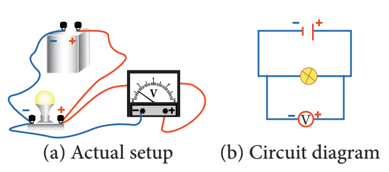
Note the positive Bracket OPEN plus bracket closed red terminal of the voltmeter is connected to the positive side of circuit and the negative Bracket OPEN minus bracket closed black terminal is connected to the negative side of the circuit across a component Bracket OPEN light bulb in the above illustration bracket closed.
The Resistance Bracket OPEN R bracket closed is the measure of opposition offered by the component to the flow of electric current through it. Different electrical components offer different electrical resistance.
Metals like copper, aluminium etc., have very much negligible resistance. That is why they are called good conductors. On the other hand, materials like nicrome, tin oxide etc., offer high resistance to the electric current. We also have a category of materials called insulators; they do not conduct electric current at all Bracket OPEN glass, polymer, rubber and paper bracket closed. All these materials are needed in electrical circuits to have usefulness and safety in electrical circuits.
The SI unit of resistance is ohm with the symbol Bracket OPEN ohm bracket closed. One ohm is the resistance of a component when the potential difference of one volt applied across the component drives a current of one ampere through it.
We can also control the amount of flow of current in a circuit with the help of resistance. Such components used for providing resistance are called as ‘resistors’. The resistors can be fixed or variable.
Figure 4.9 Circuit symbol for resistor image was given below
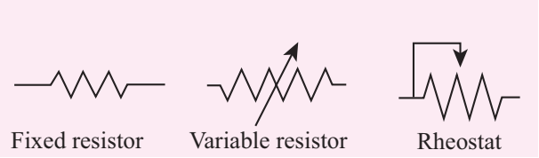
Fixed resistors have fixed value of resistance, while the variable resistors like rheostats can be used to obtain desired value of resistance Bracket OPEN Figure 4.9 bracket closed.
Box item open
As both e m f and potential difference are measured in volt, they may appear the same. But they are not. The e m f refers to the voltage developed across the terminals of an electrical source when it does not produce current in the circuit. Potential difference refers to the voltage developed between any two points Bracket OPEN even across electrical devices bracket closed in an electric circuit when there is current in the circuit.Box item ends
To represent an electrical wiring or solve problem involving electric circuits, the circuit diagrams are made.
The four main components of any circuits namely, Bracket OPEN 1 bracket closed cell, Bracket OPEN 2 bracket closed connecting wire, Bracket OPEN 3 bracket closed switch and Bracket OPEN 4 bracket closed resistor or load are given above. In addition to the above many other electrical components are also used in an actual circuit. A uniform system of symbols has been evolved to describe them. It is like learning a sign language, but useful in understanding circuit diagrams. Some common symbols in the electrical circuit are shown in Table 4.1.
Figure 4.10 Typical electric circuit image was given below
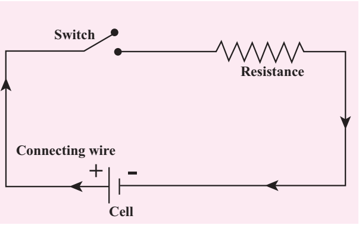
Box item open
Take a condemned electronic circuit board in a TV remote or old mobile phone. Look at the electrical symbols used in the circuit. Find out the meaning of the symbols known to you. Box item ends
Table 4.1 Common symbols in electrical circuits was given below
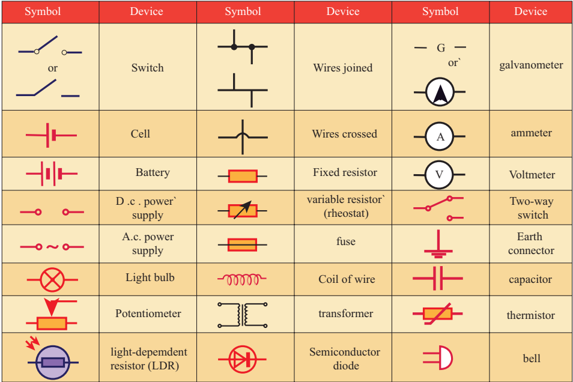
Look at the two circuits, shown in Figure 4.11. In Figure A two bulbs are connected in series and in Figure B they are connected in parallel. Let us look at each of these separately.
Figure 4.11 Series and parallel connections image A and B was given below
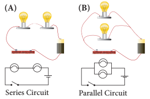
Let us first look at the current in a series circuit. In a series circuit the components are connected one after another in a single loop. In a series circuit there is only one pathway through which the electric charge flow. From the above we can know that the current I all along the series circuit remain same. That is in a series circuit the current in each point of the circuit is same.
In parallel circuits, the components are connected to the e.m.f. source in two or more loops. In a parallel circuit there is more than one path for the electric charge to flow. In a parallel circuit the sum of the individual current in each of the parallel branches is equal to the main current flowing into or out of the parallel branches. Also, in a parallel circuit the potential difference across separate parallel branches are same.
When current flows in a circuit it exhibits various effects. The main effects are heating, chemical and magnetic effects.
Box item open
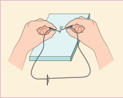
Cut an arrow shaped strip from aluminium foil. Ensure that the head is a fine point. Keep the arrow shaped foil on a wooden board. Connect a thin pin to two lengths of wire. Connect the wires to the terminals of electric cell, may be of 9V. Press one pin onto the pointed tip and other pin at a point about one or two millimeters away. Can you see that the tip of aluminium foil starts melting question mark box item ends
Box item open
When the flow of current is ‘resisted’ generally heat is produced. This is because the electrons while moving in the wire or resistor suffer resistance. Work has to be done to overcome the resistance which is converted in to heat energy. This conversion of electrical energy into heating energy is called ‘Joule heating’ as this effect was extensively studied by the scientist Joule. This forms the principle of all electric heating appliances like iron box, water heater, toaster etc. Even connecting wires offer a small resistance to the flow of current. That is why almost all electrical appliances including the connecting wires are warm when used in an electric circuit.
Box item open
Copper plates and carbon rod in a beaker image was given below
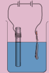
Take a beaker half filled with copper sulphate solution. Take a carbon rod from a used dry cell. Wind a wire on its upper end. Take a thick copper wire, clean it well and flatten it with a hammer. Immerse both the copper wire and carbon rod in the copper sulphate solution. Connect the carbon rod to the negative terminal of an electric cell and copper wire to the positive terminal of the cell. Also ensure that the copper and the carbon rod do not touch each other, but are close enough. Wait and watch. After some time you would find fine copper deposited over the carbon rod. This is called as electroplating. This is due to the chemical effect of current. box item ends
So far we have come across the cases in which only the electrons can conduct electricity. But, here when current passes through electrolyte like copper sulphate solution, both the electron and the positive copper ion conduct electricity. The process of conduction of electric current through solutions is called ‘electrolysis’. The solution through which the electricity passes is called ‘electrolyte’. The positive terminal inserted in to the solution is called ‘anode’ and the negative terminal ‘cathode’. In the above experiment, copper wire is anode and carbon rod is cathode.
Box item open
Extremely weak electric current is produced in the human body by the movement of charged particles. These are called synaptic signals. These signals are produced by electro-chemical process. They travel between brain and the organs through nervous system. Box item ends
Figure 4.12 Direction of current and magnetic field image was given below
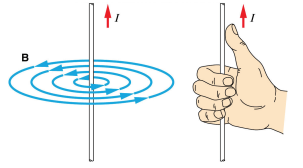
A wire or a conductor carrying current develops a magnetic field perpendicular to the direction of the flow of current. This is called magnetic effect of current. The discovery of the scientist Oyersted and the ‘right hand thumb rule’ are detailed in the chapter on Magnetism and Electromagnetism in this book.
Direction of current is shown by the right hand thumb and the direction of magnetic field is shown by other fingers of the same right hand Bracket OPEN Figure 4.12 bracket closed.
There are two distinct types of electric currents that we encounter in our everyday life: direct current Bracket OPEN dc bracket closed and alternating current Bracket OPEN ac bracket closed.
We know current in electrical circuits is due to the motion of positive charge from higher potential to lower potential or electron from lower to higher electrical potential. Electrons move from negative terminal of the battery to positive of the battery. Battery is used to maintain a potential difference between the two ends of the wire. Battery is one of the sources for dc current. The dc is due to the unidirectional flow of electric charges. Some other sources of dc are solar cells, thermo couples etc. The graph depicting the direct current is shown in Figure 4.13.
Figure 4.13 Wave form of dc image was given below
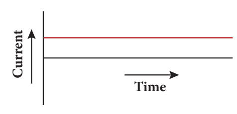
Many electronic circuits use dc. Some examples of devices which work on dc are cell phones, radio, electric keyboard, electric vehicles etc
If the direction of the current in a resistor or in any other element changes its direction alternately, the current is called an alternating current. The alternating current varies sinusoidally with time. This variation is characterised by a term called as frequency. Frequency is the number of complete cycle of variation, gone through by the ac in one second. In ac, the electrons do not flow in one direction because the potential of the terminals vary between high and low alternately. Thus, the electrons move to and fro in the wire carrying alternating current. It is diagrammatically represented in Figure 4.14.
Figure 4.14 Wave form of ac image was given below
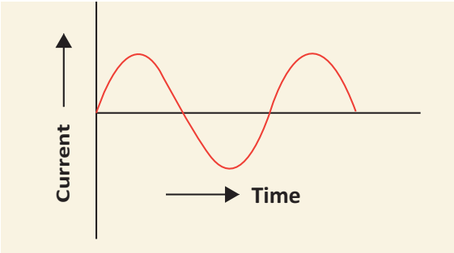
Domestic supply is in the form of ac. When we want to use an electrical device in dc, then we have to use a device to convert ac to dc. The device used to convert ac to dc is called rectifier. Colloquially it is called with several names like battery eliminator, dc adaptor and so on. The device used to convert dc into ac is called inverter. The symbols used in ac and dc circuits are shown in Figure 4.15. The symbol used in AC and DC circuit diagrams was given below
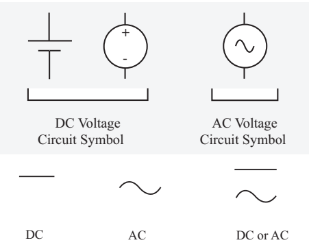
The voltage of ac can be varied easily using a device called transformer. The ac can be carried over long distances using step up transformers. The loss of energy while distributing current in the form of ac is negligible. Direct current cannot be transmitted as such. The ac can be easily converted into dc and generating ac is easier than dc. The ac can produce electromagnetic induction which is useful in several ways.
Electroplating, electro refining and electrotyping can be done only using dc. Electricity can be stored only in the form of dc.
In India, the voltage and frequency of ac used for domestic purpose is 220 V and 50 Hz respectively where as in United States of America it is 110 V and 60 Hz respectively. Box item ends
The following are the possible dangers as for as electric current is concerned.
Damaged insulation: Do not touch the bare wire. Use safety glowves and stand on insulating stool or rubber slippers while handling electricity.
Overload of power sockets: Do not connect too many electrical devices to a single electrical socket.
Inappropriate use of electrical appliances: Always use the electrical appliances according to the power rating of the device like ac point, TV point, microwave oven point etc.
Environment with moisture and dampness: Keep the place, where there is electricity, out of moisture and wetness as it will lead to leakage of electric current.
Beyond the reach of children: The electrical sockets are to be kept away from the reach of little children who do not know the dangers of electricity.
Box item open
Resistance of a dry human body is about 100000 ohm. Because of the presence of water in our body the resistance is reduced to few hundred ohm. Thus, a normal human body is a good conductor of electricity. Hence, precautions are required while doing electrical work. Box item ends
Electric charge is a fundamental property of all matter.
Like charges repel and unlike charges attract.
Electric field Bracket OPEN E bracket closed is represented by lines and arrowheads indicating the direction of the electric filed.
Electric current flows from higher electric potential to lower electric potential.
The movement of the positive charge is called as ‘conventional current’. The flow of electrons is termed as ‘electron current’.
The opposition to the flow of current is called resistance.
The SI unit of resistance is ohm with the symbol ohm.
The four main components of any circuit are: cell, connecting wire, switch and resistor.
In a parallel circuit there is more than one path for the electric charge to flow.
The main effects when current flows in a circuit are heating, chemical and magnetic effects.
There are two distinct types of electric currents that we encounter in our everyday life
direct current Bracket OPEN dc bracket closed and alternating current Bracket OPEN ac bracket closed.
Electric charge It is the fundamental property of matter.
Electric field The Region around a charge in which another charge experiences electric force.
Electric lines of force The electric lines of force are straight or curved paths along which a unit positive charge tends to move in the electric field.
Electric potential Measure of the work done on unit positive charge to bring it to that point against all electrical forces.
Electric current Electric current is the rate at which charges flow across a conductor in a circuit.
Ammeter An instrument used for measuring the amount of electric current.
e m f Work done by the electrical energy source in driving a unit charge around the complete circuit.
Voltmeter An instrument used to measure the potential difference.
Resistance The measure of opposition offered by the component to the flow of electric current through it.
Resistors Components used for providing resistance.
Electrolyte The solution through which electric current flows.
Anode The positive terminal in the electrolyte.
Cathode The negative terminal in the electrolyte.
Alternating current Current in a resistor or in any other element which changes its direction alternately.